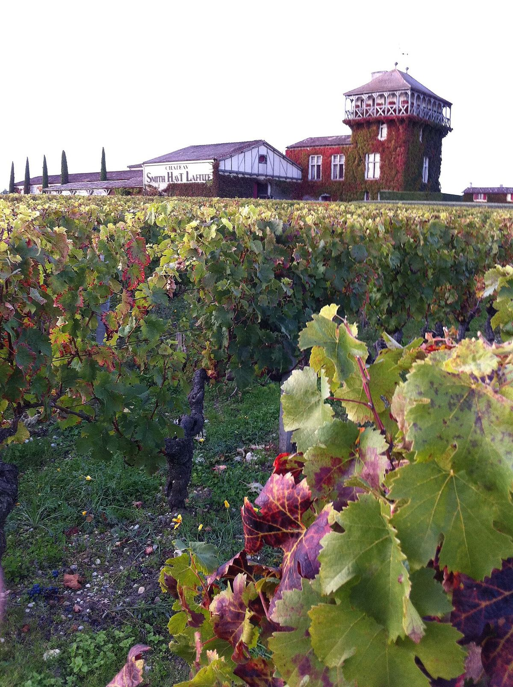

ROUGE
Pessac-Léognan est l'appellation créée en 1987 dans le nord des Graves, aux portes de la ville de Bordeaux. Elle produit des rouges et des blancs secs et réunit toutes les propriétés du classement des Graves, dont Château Haut-Brion.

Les Graves, qui doivent leur nom à leurs sols de graves, sont l'un des berceaux historiques du vin de Bordeaux : leurs vignes, toutes proches de la ville, alimentèrent au Moyen Âge une grande partie du commerce avec l'Angleterre. Certaines propriétés ont des origines très anciennes, comme Château Pape Clément, lié à Bertrand de Got, archevêque de Bordeaux devenu pape sous le nom de Clément V. Au XVIIe siècle, la famille de Pontac, propriétaire de Haut-Brion, fut parmi les premières à vendre son vin sous le nom du domaine, et le chroniqueur anglais Samuel Pepys nota en 1663 avoir bu à Londres un vin appelé Ho Bryan. En 1855, Haut-Brion fut le seul rouge extérieur au Médoc à figurer parmi les premiers crus.
Au XXe siècle, l'expansion urbaine de Bordeaux réduisit fortement la surface viticole dans les communes les plus proches de la ville. Pour distinguer le nord des Graves, considéré comme le meilleur secteur, l'appellation Pessac-Léognan fut créée en 1987 ; elle regroupe une dizaine de communes, parmi lesquelles Pessac, Talence, Léognan, Martillac et Villenave-d'Ornon. L'appellation Graves subsiste pour la partie méridionale de la zone, qui s'étend vers Langon.
Le climat est océanique tempéré, avec une légère influence urbaine sur les vignes les plus proches de la ville et la protection de la forêt des Landes à l'ouest. Les sols associent des graves, formant parfois des croupes bien drainées, à des sables et des argiles, sur des sous-sols variés.
Le classement des vins des Graves fut établi en 1953 pour les rouges et complété en 1959 par l'ajout des blancs. Contrairement à celui de 1855, il ne comporte pas de catégories : toutes les propriétés portent la mention cru classé de Graves, pour le rouge, le blanc ou les deux. Toutes les propriétés classées se trouvent aujourd'hui dans l'appellation Pessac-Léognan ; parmi elles figurent Château Haut-Brion, Château La Mission Haut-Brion, Château Pape Clément, Château Haut-Bailly, Château Smith Haut Lafitte, Domaine de Chevalier et Château Carbonnieux.
Les rouges, qui représentent l'essentiel de la production, reposent sur le cabernet-sauvignon et le merlot, avec du cabernet franc et, dans une moindre mesure, du petit verdot et du malbec. Les blancs secs, issus de sauvignon blanc et de sémillon, sont souvent fermentés et élevés en barrique et comptent parmi les blancs les plus réputés de Bordeaux pour leur aptitude au vieillissement.